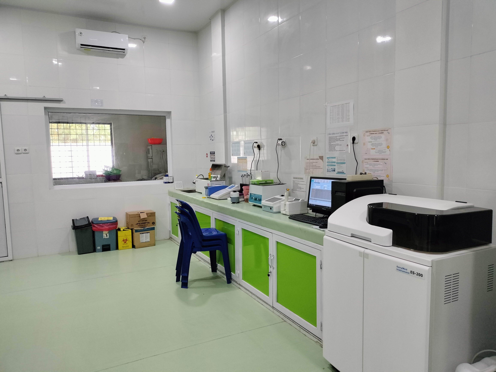
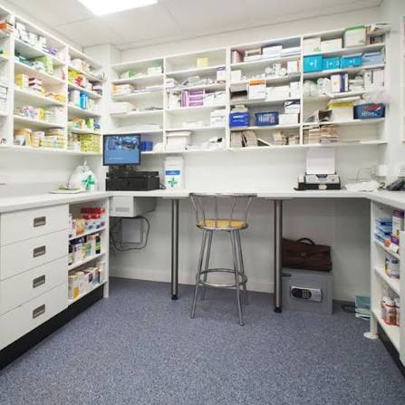

IGD 24 Jam
Pelayanan kegawatdaruratan yang siap melayani pasien selama 24 jam setiap hari.
RSU Sapta Medika Indrapura menyediakan berbagai fasilitas pelayanan kesehatan untuk mendukung kenyamanan pasien, keluarga, serta kebutuhan pelayanan medis.
Kami terus berupaya menyediakan fasilitas yang nyaman dan mendukung kebutuhan pelayanan kesehatan masyarakat.

Pelayanan kegawatdaruratan yang siap melayani pasien selama 24 jam setiap hari.

Ruang perawatan yang nyaman untuk mendukung proses pemulihan pasien selama menjalani perawatan.

Fasilitas ruang operasi yang mendukung pelaksanaan tindakan pembedahan dengan pelayanan yang aman dan profesional.

Pelayanan pemeriksaan, konsultasi, dan perawatan kesehatan anak oleh dokter spesialis anak.

Pelayanan pemeriksaan dan konsultasi kesehatan mata untuk membantu menjaga kesehatan dan kualitas penglihatan pasien.

Pelayanan konsultasi dan pemeriksaan bagi pasien dengan kebutuhan penanganan dan tindakan bedah.

Pelayanan konsultasi dan pemeriksaan untuk penanganan berbagai kondisi kesehatan dan penyakit organ dalam.

Pelayanan kesehatan ibu dan wanita meliputi konsultasi kehamilan serta kesehatan reproduksi.

Fasilitas pemeriksaan laboratorium untuk mendukung proses diagnosis dan kebutuhan pelayanan medis pasien.

Fasilitas pemeriksaan penunjang untuk membantu dokter dalam proses pemeriksaan dan diagnosis pasien.

Pelayanan penyediaan obat dan kebutuhan farmasi untuk mendukung pelayanan pasien.

Layanan transportasi medis untuk mendukung kebutuhan penanganan dan pelayanan pasien.

Area tunggu yang nyaman bagi pasien dan keluarga selama berada di lingkungan rumah sakit.
Hubungi RSU Sapta Medika Indrapura untuk mendapatkan informasi mengenai layanan dan fasilitas rumah sakit.